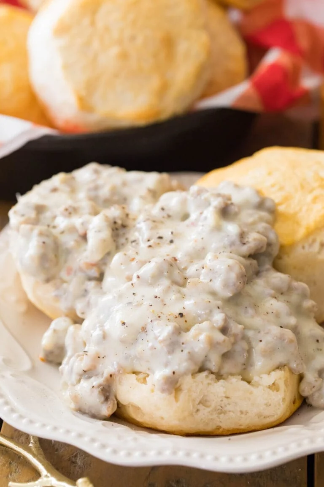

Sausage Gravy

Description
This gravy is the sausagiest gravy you've ever sausaged. It's sausage is so sausage it will make you sausage your sausages. Sausagously.
If you can't find any sausage you can substitute butternut squash for the sausage and sage for the milk and vegetable broth for the rest and just make some soup instead.
Ingredients
- Pork Sausage
- 2 tbsp flour
- 4 tbsp butter
- 2 cups whole milk
- 2 sprigs Rosemary
- Salt/Pepper to taste
Steps
- Cook the sausage
- Add butter to melt
- Add flour and stir stir stir
- Gingerly and with hesitation, pour in the milk and stir that too
- Add rosemary and other seasonings to taste
- Serve it hot so you can burn your mouth